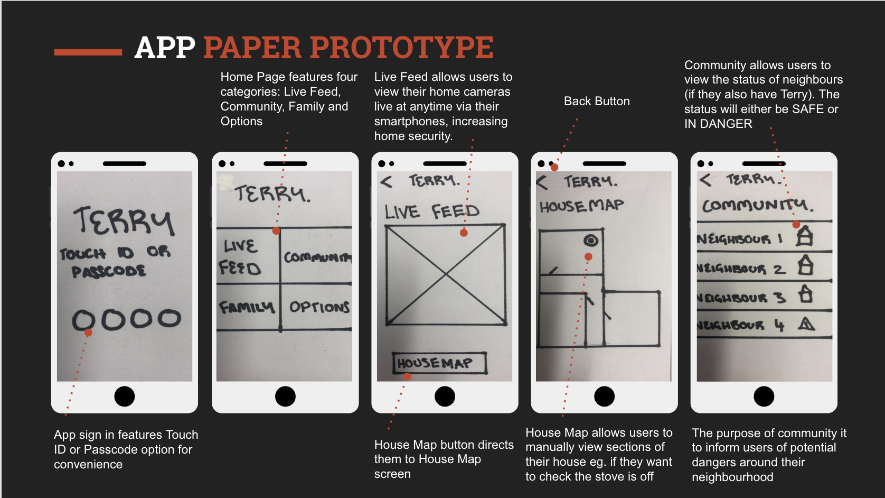
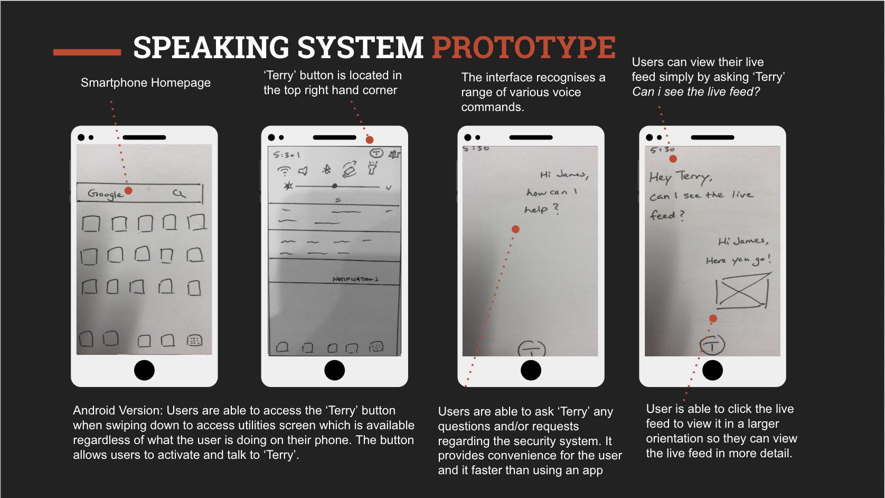
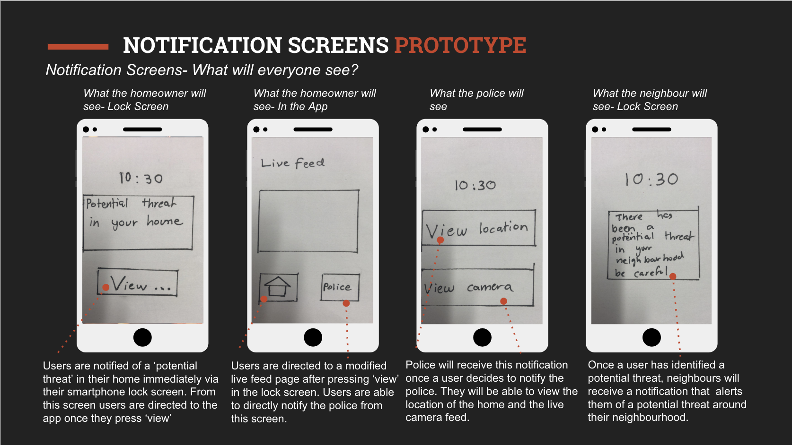
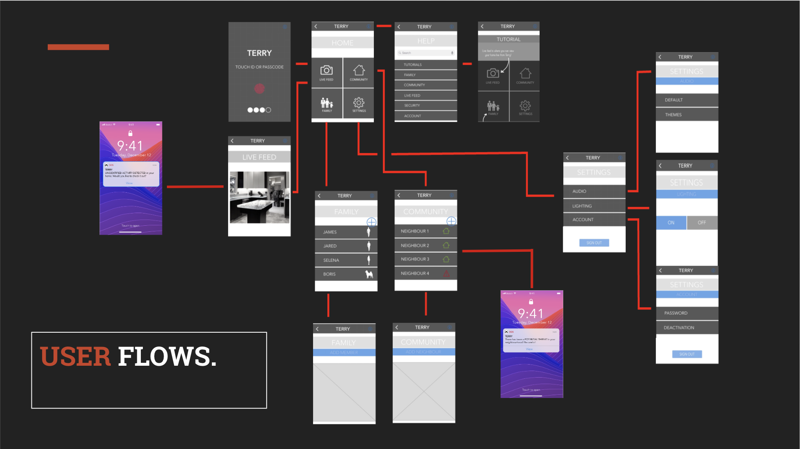

Terry: Your personal home security guard
What is it?
'Terry' is a small drone that guards the inside of a homeowner's house when they are not home. The drone monitors the inside of the house by slowly flying around the house whilst producing "home noises" such as people talking or a dog barking. The audio from the drone aims to create a presence in the home in order to deter burglars from even entering the home. There is also an app interface that Homeowners can use as a way of interacting with the Terry drone whilst they are not home. Homeowners will be alerted by the drone via the app if Terry identifies a potential threat in the home. There is also a camera attached to Terry which monitors the house and thus the homeowner can see what the drone sees via the app.
The app is also accessible to neighbours and police. Neighbours will also be notified if their neighbour has a potential threat in their home. The purpose of this is to create awareness in the neighbourhood and remind the people to be cautious. Police will only be notified if the homeowner decides to send an SOS emergency to the police. (more information provided in the prototype walkthroughs)
Terry App Interface
Notification for Neighbours
Notification for Police
Overview of Design Process
Throughout our design process, our team undertook several iterations of ideas and research in order to create an efficient app interface and reliable autonomous drone. The topic of 'home security' was chosen because we believed we could further iterate on already existing autonomous products that are used for the protection of the home. We conducted several interviews, surveys, and design methods in order to gather important data and identify key issues and opportunities to focus on. The two themes we chose to put strong emphasis on was "scaring the burglar" and "a presence in the home". These themes were chosen because we aimed to completely prevent burglars from entering the home.
Concept Development
During our ideation process, we brainstormed concepts and ideas we could potentially pursue. Initially we came up with four concepts: Beehive Idea, Roomba Idea, Marbles Idea, Flower Idea


From our four initial concepts, we decided to iterate further on our ‘Roomba’ and ‘Beehive’ concepts. Regarding the Roomba concept, our group liked the idea of a drone monitoring the inside of the house without anyone home. Same idea with the Beehive concept except, the drones are monitoring the outside of the house.
 OUTDOOR DRONE CONCEPT
OUTDOOR DRONE CONCEPT
We decided to choose our 'INDOOR DRONE CONCEPT' as we believed it suited our goal of “a presence in the home” so that burglars won’t even attempt to intrude in on the home. We believed that the outdoor concept was impractical as we came up with reasonings such as, “what if it starts raining? Where will the drones be kept when they are not deployed?” We liked the idea of a drone that produces audio whilst simultaneously monitoring the home as it was not only securing the house, but also creating a presence in the home.
Creation of Prototypes
We created two interfaces based on our indoor concept. Our group used paper prototypes to display two interfaces based on our "indoor concept" in order to show a skeleton version of what each interface would look like. The two interfaces were an 'App' and a 'Smart Speaking System'.
Paper Prototype: The App

Scenario of a homeowner using the app interface
Paper Prototype: Smart Speaking System

Scenario of a homeowner using the Smart Speaking System interface

Notification Screens
These are notification screens the homeowner, neighbours and police will see.
User Testing
Four our user testing of our paper prototypes, we used various methods in order to obtain feedback for our prototypes. We used contextual observation because we were able to observe the overall experience the user was going through as they interacted with our interfaces. Think Aloud method was used as it allowed us to gain the users initial feedback, opinions and thoughts whilst using the product. Finally, we used A/B Testing to allow the user to compare the two interfaces and state their opinions on the pros and cons of both interfaces.
Choosing our interface
After analysing our user testing feedback, we made the decision to pursue our 'App' concept. From our user testing, we believed that we had more opportunities to effectively iterate on this concept rather than the Smart Speaking System. The user testing feedback also provided us with important insights into new elements that need to be included, aspects of the app that need changing, and removing elements that are not useful. These changes were applied into our wireframes.
Terry App Wireframes



Wireframes User Testing
We user tested our wireframes once again to gather more feedback in order to improve our interface. Our group conducted the same methods to obtain feedback and some key themes we needed to focus on were: